Urolithiasis — the formation of urinary stones (calculi) — is one of the most common and most dangerous surgical emergencies in male cattle. A stone that lodges in the narrow urethra blocks the flow of urine completely. The bladder fills, the animal suffers severe pain, and if the blockage is not relieved the bladder can rupture and the animal can die within hours.
This guide explains the complete theory of urolithiasis in cattle, its causes and risk factors, the clinical signs every farmer must recognise, how the veterinarian confirms the diagnosis, the emergency management, and the three main surgical options — urethrotomy, tube cystotomy and perineal urethrostomy — step by step, with postoperative care, complications and prevention.
Important: All surgical procedures described on this page must be performed by a qualified veterinarian under proper anaesthesia and aseptic conditions. Never attempt surgery on your own animal — urinary obstruction is an emergency that needs professional veterinary help immediately.
What Is Urolithiasis? — Theory and Causes
Urolithiasis means stones (calculi) in the urinary tract. In cattle the stones are most often made of phosphate salts (struvite and calcium phosphate), and sometimes of calcium oxalate or silica. They form when urine becomes concentrated and rich in minerals, so crystals settle out, join together and grow into stones. Small stones may pass out harmlessly, but a stone that lodges in the urethra causes complete obstruction.
Male cattle — steers and bulls — are far more at risk than females. The male urethra is long and narrow, and it has two natural bends where stones lodge: the sigmoid flexure (an S-shaped bend of the penis) and the ischial arch (where the urethra passes under the pelvis). A third common site is the urethral process at the tip of the penis. The female urethra is short, wide and straight, so stones usually pass out on their own.
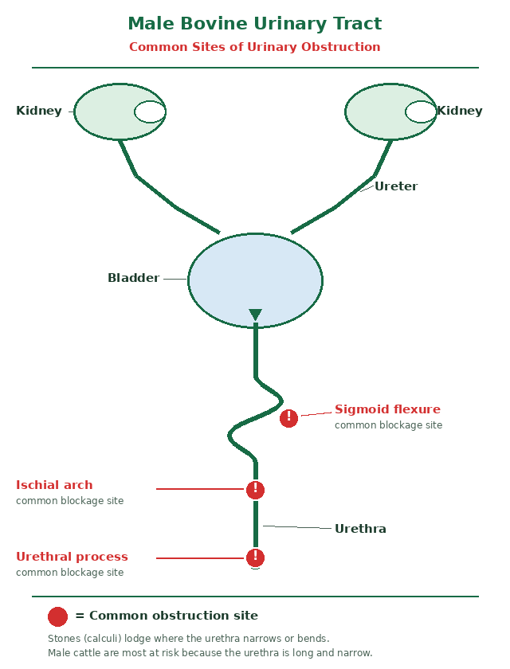
Male bovine urinary tract — the three common sites where stones lodge
Causes and Risk Factors
1
High-concentrate feeding(Heavy grain rations in fattening steers raise phosphorus in the urine and favour stone formation)
2
Low water intake(Too little drinking water makes urine concentrated, so minerals crystallise more easily)
3
Mineral imbalance(A wrong calcium-to-phosphorus ratio, excess magnesium or excess phosphorus in the ration)
4
Early castration(Steers castrated very young develop a narrower urethra, which blocks more easily)
5
Low-salt, low-roughage rations(Little salt means less water intake; little roughage means less chewing and less saliva)
6
Urinary infection and alkaline urine(Infection and high urine pH help phosphate crystals form and grow)
Clinical Signs of Urinary Obstruction
A blocked animal shows clear signs. The farmer who recognises them early and calls the veterinarian at once can save the animal's life. The signs develop over hours, not days — and once the bladder ruptures, the animal often becomes quiet and dull, which farmers wrongly take as improvement.
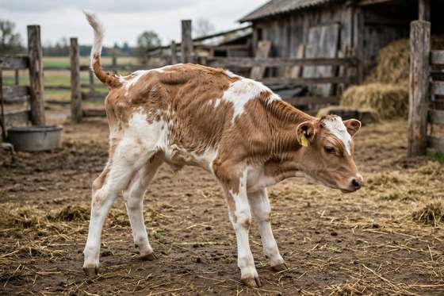
Straining to urinate — the classic first sign
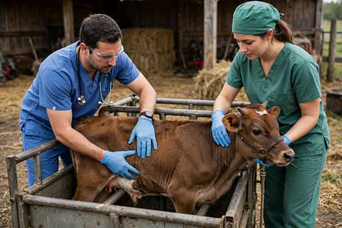
Examination of a blocked calf on the farm
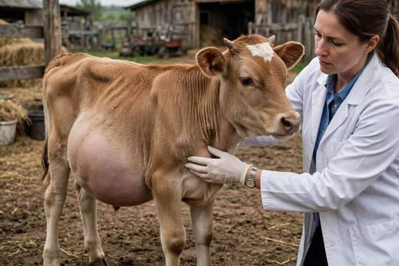
Distended abdomen — a late sign; bladder rupture is an emergency
1
Straining to urinate (stranguria)(Repeated painful straining with tail raised, often mistaken for constipation)
2
Dribbling of urine, drop by drop(Only a few drops pass, or no urine at all despite strong effort)
3
Colic and restlessness(Kicking at the belly, looking back at the flank, getting up and lying down, grinding teeth)
4
Urethral pulsation(Visible rhythmic pulsing of the urethra under the tail, with each strain)
5
Swollen, painful abdomen(The bladder fills and the belly becomes tight and distended)
6
Loss of appetite, dullness, dehydration(The animal stops eating and drinking, becomes weak and depressed)
7
Bladder rupture — a false calm(Straining suddenly stops and the animal seems quieter, but urine is leaking into the abdomen — this is the most dangerous stage)
8
Swelling under the skin (urethral rupture)(If the urethra itself bursts, urine collects under the skin of the belly and hind legs)
Diagnosis — How the Veterinarian Confirms the Blockage
Diagnosis starts with the history — a male calf or steer on concentrate feed that has stopped passing urine — and a careful physical examination. The veterinarian checks the abdomen, feels for a full bladder, examines the penis and the urethral process, and looks for urethral pulsation. A blocked bladder can often be felt on rectal examination in larger animals.
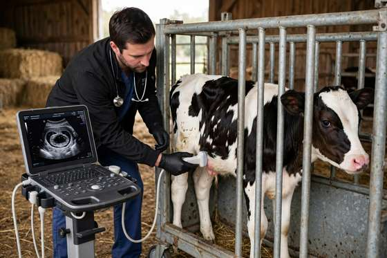
Ultrasound — confirms a full bladder and locates stones
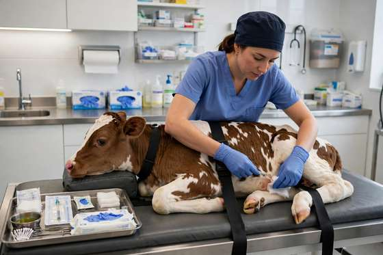
Catheterisation — tests whether the urethra is open
History and clinical examination — straining, dribbling, colic, distended abdomen, urethral pulsation.
Ultrasonography — shows a distended bladder, stones in the bladder or urethra, and free fluid in the abdomen if the bladder has ruptured.
Passing a urinary catheter — the catheter stops at the level of the stone, which tells the veterinarian exactly where the blockage is.
Rectal examination — in larger animals a tense, full bladder can be felt.
Abdominocentesis — if bladder rupture is suspected, fluid drawn from the abdomen is tested for urea and creatinine.
Blood tests — may show dehydration and raised urea and creatinine from urine backing up into the blood.
Emergency Management — First Steps
Urinary obstruction is an emergency. The veterinarian's first aim is to relieve the pressure and save the animal's life, and only then to plan the final surgery.
1
Call the veterinarian immediately(Do not wait — every hour of blockage increases the risk of bladder rupture)
2
Keep the animal calm and restrained(A quiet, safely restrained animal is easier to examine and treat)
3
Check and remove a stone at the urethral process(A stone at the tip of the penis can sometimes be removed or the process trimmed — only by the veterinarian)
4
Try gentle catheterisation(A catheter may push a small stone back into the bladder and restore urine flow temporarily)
5
Correct dehydration with fluids(Intravenous fluids as prescribed by the veterinarian, especially if the animal is dull or the bladder has ruptured)
6
Decide the surgery without delay(If the blockage cannot be cleared, the veterinarian proceeds to urethrotomy or tube cystotomy the same day)
Warning: Never give medicines, herbal remedies or home treatments to a blocked animal, and never try to force a catheter yourself. Wrong handling can rupture the urethra or the bladder. Only a qualified veterinarian should manage this emergency.
Surgical Options — Step by Step
The choice of surgery depends on where the stone is lodged, how long the animal has been blocked, and whether the bladder has ruptured. The three main procedures are described below. All are performed by a qualified veterinarian under proper anaesthesia and aseptic conditions.
1. Urethrotomy
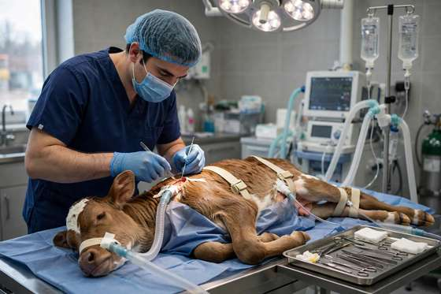
Urethrotomy — opening the urethra to remove the stone
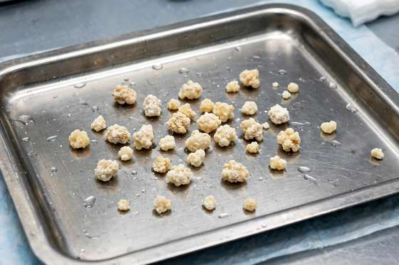
Urinary stones (calculi) removed during surgery
Urethrotomy is an incision into the urethra directly over the lodged stone, most often at the ischial arch. It is the treatment of choice when the stone can be located at an accessible site.
1
Restrain and anaesthetise the animal(Local or epidural anaesthesia with sedation, as decided by the veterinarian)
2
Prepare the surgical site aseptically(Clip, scrub and disinfect the skin over the ischial region)
3
Locate the stone by palpation(The stone is felt through the urethra and fixed in place with the fingers)
4
Incise the skin and the urethra over the stone(A careful lengthwise incision opens the urethra onto the stone)
5
Remove the stone and flush the urethra(The stone is lifted out; the urethra is flushed both ways to clear sand and small fragments)
6
Place a temporary catheter if needed(A catheter keeps the urethra open while it heals and prevents early stricture)
7
Close or leave the wound as the veterinarian decides(Small urethrotomy wounds are often left to heal by second intention)
2. Tube Cystotomy
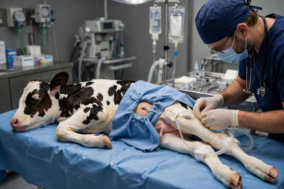
Tube cystotomy — urine drains through a tube while the urethra heals
Tube cystotomy is the most reliable operation when the stone cannot be reached, when there are many stones, or when the bladder has ruptured. A tube is placed directly into the bladder so urine drains out while the urethra rests and heals.
1
Anaesthetise and prepare the lower abdomen(General or local anaesthesia with sedation; the belly is clipped and scrubbed)
2
Open the abdomen (laparotomy) near the bladder(A small incision in the lower flank or midline gives access to the bladder)
3
Empty and wash out the bladder(Urine, sand and stones are removed from the bladder)
4
Repair the bladder if it has ruptured(Any tear is stitched closed; leaked urine is washed out of the abdomen)
5
Place a Foley-type catheter tube into the bladder(The tube is stitched to the bladder wall and brought out through the body wall)
6
Fix the tube and close the abdomen(The tube is secured to the skin; the abdominal wound is closed in layers)
7
Keep the tube for 10 to 14 days(Urine drains through the tube; the tube is removed only when the animal urinates normally through the urethra)
3. Perineal Urethrostomy
Perineal urethrostomy creates a permanent new opening for urine below the anus, in the perineal region. It is used when the urethra is badly damaged, when obstruction keeps coming back, or when the animal is kept only for fattening and breeding is not needed. The veterinarian opens the urethra at the ischial arch and stitches its edges to the skin, making a lasting opening through which the animal urinates for life. It is a salvage procedure — it saves the animal's life when other options have failed.
Postoperative Care and Complications
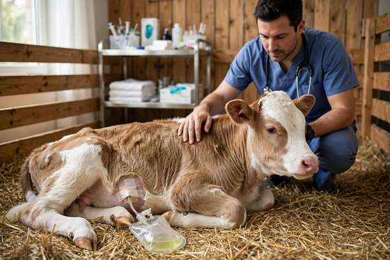
Recovery — close monitoring in the first days after surgery
Good aftercare decides whether the surgery succeeds. The animal must be watched closely in the first days, when re-obstruction and infection are most likely.
Watch urine flow every day — the animal must pass urine freely; any new straining means the veterinarian must be called at once.
Keep the tube clean and open — after tube cystotomy, check the tube daily for blockage, kinking or leakage.
Clean the wound daily — follow the veterinarian's wound-care instructions and keep the bedding clean and dry.
Medicines as prescribed by a veterinarian — antibiotics to prevent infection and anti-inflammatory medicines for pain; never use leftover medicines or guess the dose.
Plenty of clean water — dilute urine helps flush out sand and small crystals.
Soft, balanced feed — reduce concentrate for a few weeks and return to the normal ration only on veterinary advice.
Possible Complications
1
Urethral stricture(Scar tissue narrows the urethra at the surgery site and can block urine again)
2
Recurrence of stones(New stones form if the ration and water supply are not corrected)
3
Wound infection(Dirty bedding or poor wound care leads to swelling, discharge and delayed healing)
4
Urine leakage into the tissues(Urine escaping from the surgical site causes swelling under the skin)
5
Bladder rupture(Late treatment can end in a burst bladder, which needs emergency surgery and carries a poor prognosis)
Prevention — Stop Stones Before They Form
Prevention is far cheaper and far more successful than surgery. Most cases of urolithiasis in cattle can be prevented by correct feeding and watering.
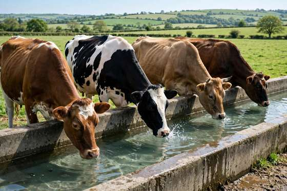
Clean water at all times — the best prevention
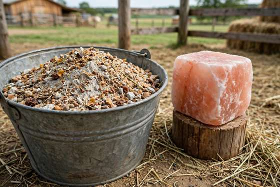
Balanced minerals and a salt block
1
Clean drinking water, always available(Dilute urine cannot form stones — check troughs daily and keep water clean and fresh)
2
Do not overfeed concentrate(Keep grain within the recommended amount for the animal's age and weight)
3
Balance the minerals(Keep a correct calcium-to-phosphorus ratio — about 2:1 — and avoid excess phosphorus and magnesium)
4
Provide a salt block(Salt increases water intake, which dilutes the urine)
5
Use a urinary acidifier when advised(Ammonium chloride in the ration, as prescribed by a veterinarian, keeps urine slightly acidic and dissolves phosphate crystals)
6
Feed enough roughage(Good hay and fodder keep the rumen healthy and reduce the risk of stone-forming rations)
7
Delay castration where possible(Later castration allows the urethra to develop to a wider diameter)
Field Guidelines for Farmers and Veterinarians
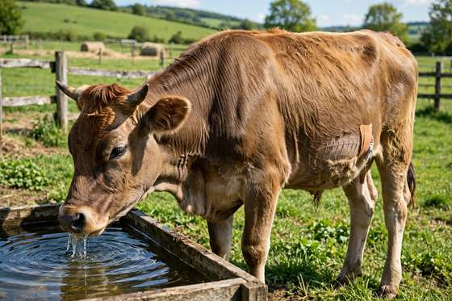
Recovered and healthy — early treatment and good prevention pay off
⚠ Field Guidelines:
Watch fattening steers and young bulls daily — a calf that strains to urinate is an emergency, not a minor problem.
Never confuse straining to urinate with constipation — check whether urine is passing before treating for anything else.
Keep a written record of the ration, the mineral mixture and water supply for every group of animals.
After surgery, keep the animal on clean dry bedding and check the wound and the urine flow twice a day.
Send removed stones for analysis when possible — knowing the stone type helps the veterinarian design the right prevention plan.
If one animal in a group blocks, review the whole group's ration and water — others may be at risk too.
Frequently Asked Questions
What is urolithiasis in cattle?
Urolithiasis is the formation of urinary stones (calculi) in the urinary tract of cattle. Stones form when minerals such as phosphate, calcium and magnesium crystallise in concentrated urine. In male cattle the stones lodge in the narrow urethra and block the flow of urine, which is a life-threatening emergency.
Why are male cattle more prone to urinary obstruction than females?
The male bovine urethra is long, narrow and has two natural bends — the sigmoid flexure and the ischial arch — where stones easily lodge. The female urethra is short, wide and straight, so small stones usually pass out on their own. Steers and bulls on high-concentrate rations are at the highest risk.
What is urethrotomy and when is it performed?
Urethrotomy is a surgical incision into the urethra to remove an obstructing stone. It is performed when a stone is lodged at an accessible site, usually at or below the ischial arch, and cannot be removed by catheterisation. The veterinarian opens the urethra over the stone, removes it, and leaves the wound to heal, often with a temporary catheter in place.
What is tube cystotomy and how does it work?
In tube cystotomy the veterinarian opens the abdomen, places a catheter tube directly into the urinary bladder, and fixes the tube to the body wall. Urine drains through the tube while the urethra rests and heals. The tube is usually left in place for 10 to 14 days and is removed once the animal can urinate normally through the urethra again.
What are the complications after urinary surgery in cattle?
The main complications are urethral stricture (narrowing of the urethra at the surgery site), recurrence of stones and re-obstruction, wound infection, urine leakage into the tissues, and bladder rupture if the blockage was treated too late. Careful postoperative monitoring, a balanced ration and plenty of clean water greatly reduce these risks.
My calf is straining to urinate — what should I do?
Call a veterinarian immediately — a blocked calf is an emergency. Do not wait and do not try home treatment. Keep the calf calm and comfortable, do not give any medicine on your own, and note when the calf last passed urine. If the bladder bursts, the calf can die within hours, so fast veterinary help is the only safe answer.
Can urinary stones in cattle be prevented by feeding?
Yes, in most cases. Give clean drinking water all the time, do not overfeed grain and concentrate, keep a balanced calcium-to-phosphorus ratio in the ration, provide a salt block, and add a urinary acidifier such as ammonium chloride as prescribed by a veterinarian. Good feeding and plenty of water are the best protection against stones.
بچھڑے میں پیشاب کی رکاوٹ (پتھری) کیا ہے اور اس کا علاج کیسے ہوتا ہے؟
مویشیوں میں پیشاب کی نالی میں پتھری بن جانے کو یورولیتھیاسس کہتے ہیں۔ یہ زیادہ تر نر بچھڑوں اور بیلوں میں ہوتی ہے جو زیادہ دانہ کھاتے ہیں اور کم پانی پیتے ہیں۔ بچھڑا پیشاب کرنے کے لیے زور لگاتا ہے، تھوڑا تھوڑا پیشاب آتا ہے یا بالکل بند ہو جاتا ہے۔ یہ ایمرجنسی ہے — فوراً جانوروں کے ڈاکٹر کو بلائیں۔ ڈاکٹر آپریشن (یوریتھروٹومی یا ٹیوب سسٹوٹومی) سے پتھری نکالتا ہے۔ بچاؤ کے لیے صاف پانی، متوازن خوراک اور نمک کا بلاک ضروری ہے۔
Key Takeaway
Urolithiasis is a preventable disease and a treatable emergency — but only if it is recognised early. A male calf that strains to urinate needs a veterinarian the same day. Urethrotomy and tube cystotomy save lives, and clean water, balanced minerals and sensible concentrate feeding stop the stones from forming in the first place. Follow current local veterinary authority guidance for surgical and medical decisions.